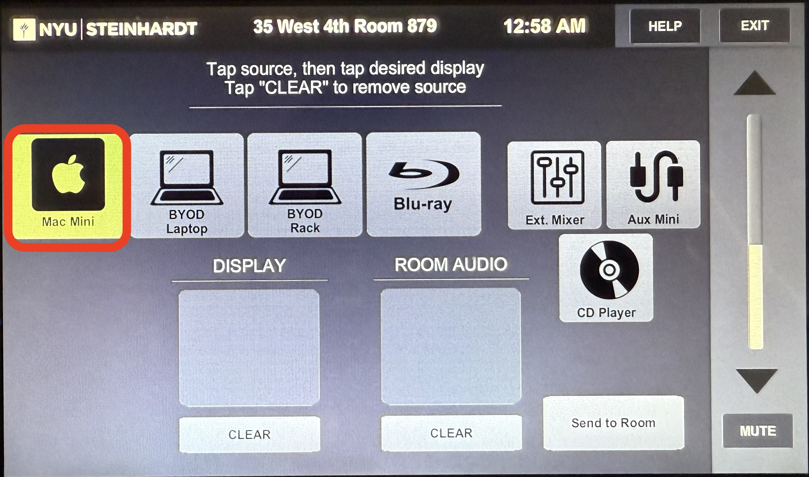
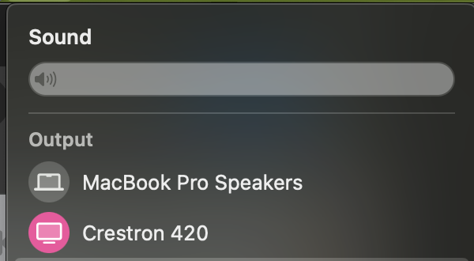
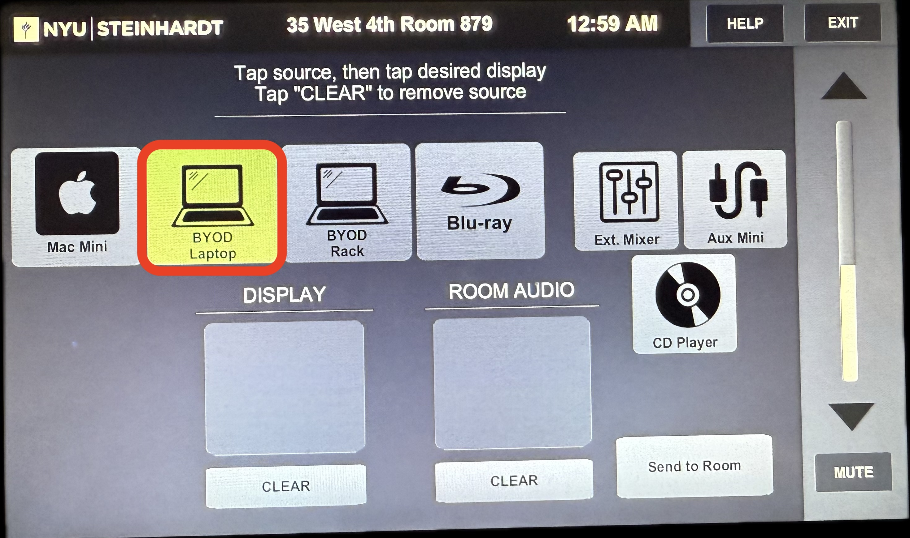
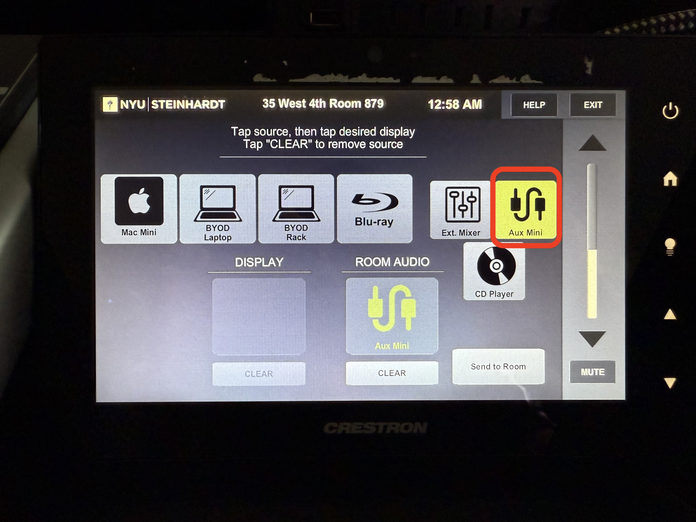
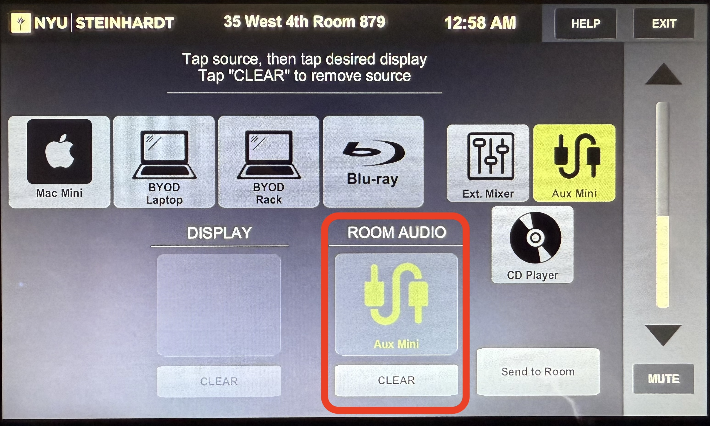

Room 879
Room PC Sound
Locate the Crestron panel. Select Mac Mini from the top row.

Click the Room Audio box. Audio from the Mac Mini will play from the speakers. Control volume on the right side of the Crestron panel.
Laptop Sound
Connect the HDMI cable in the room to your laptop.

On your device, select Crestron 420 as the audio output.

On the Crestron panel, select BYOD Laptop from the top row.

Click the Room Audio box. Audio will play from the speakers. Control volume on the right side of the Crestron panel.
External Sound
Connect to the aux cable in the room.

On the Crestron panel, select Aux Mini from the top row.

Click the Room Audio box. Audio will play from the speakers.
